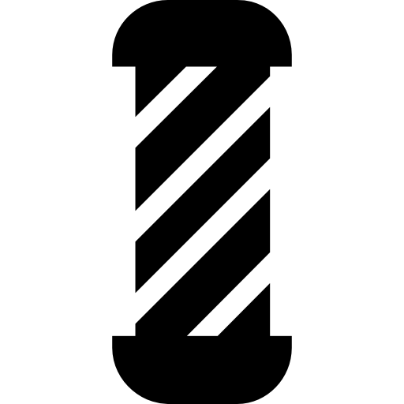

<mat-toolbar class="navBar">
  <div *ngIf="token != null">
    <button mat-icon-button class="example-icon" (click)="drawer.toggle()" aria-label="Example icon-button with menu icon">
      <mat-icon>menu</mat-icon>
    </button>
  </div>
  
  <span>Barber manager</span>
  <span class="example-spacer"></span>
  <div *ngIf="token == null">
    <button mat-raised-button color="basic" (click)="openDialogIniciar()" aria-label="Example icon-button with heart icon">
      Iniciar Sesión
    </button>
    <span class="entrebtn">--</span>
    <button mat-raised-button color="basic" (click)="openDialogRegistrar()" aria-label="Example icon-button with share icon">
      Registrarse
    </button>
  </div>
  <div *ngIf="token != null">
    <span>{{clienteAuntenticado.usuario}}</span>
    <span class="entrebtn">--</span>
    <button mat-icon-button [matMenuTriggerFor]="menu" aria-label="Example icon-button with a menu">
      <mat-icon>more_vert</mat-icon>
    </button>
    <mat-menu #menu="matMenu">
      <button mat-menu-item (click)="toPerfil()">
        <mat-icon>build</mat-icon>
        <span>Configurar perfil</span>
      </button>
      <button mat-menu-item (click)="cerrarSesion()">
        <mat-icon>exit_to_app</mat-icon>
        <span>Cerrar sesión</span>
      </button>
    </mat-menu>
  </div>
</mat-toolbar>